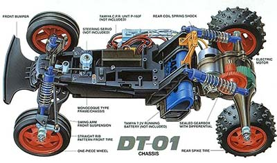

タミヤ DT-01

引用元画像：タミヤ公式サイト
📋 基本情報
| メーカー | タミヤ（Tamiya） |
|---|---|
| 機種名 | DT-01 |
| 型番 | 58273（マッドファイター）など |
| 発売時期 | 2001年頃 |
| 生産状況 | 生産終了 |
| カテゴリー | オフロードバギー |
✨ 機種の特徴
- シャフトドライブ4WD採用のエントリーバギー
- シンプルな構造で組み立てやすい設計
- マッドファイターなど人気モデルに採用
- 堅牢なバスタブシャーシ構造
- メンテナンス性に優れた設計
🔧 技術仕様
| 駆動方式 | シャフトドライブ4WD |
|---|---|
| シャーシタイプ | バスタブシャーシ |
| サスペンション | 4輪独立ダブルウィッシュボーン |
| ダンパー | オイルダンパー標準装備 |
| モーター位置 | 縦置き（センターマウント） |
🔨 修理難易度
難易度が上がった理由
- 生産終了から20年以上経過し、純正パーツの入手が困難
- 一部のパーツは復刻されたが、すぐに品切れになった
- ギアボックスやアームパーツなど、消耗品の在庫が少ない
- 代替パーツの選択肢が限られている
⚠️ 注意: 2020年代現在、パーツ入手が非常に困難なため、修理には専門知識と代替パーツの知識が必要です。
⚠️ よくある故障
- デフギアの摩耗: 走行距離が長いと摩耗により動作不良が発生
- ギアボックス内部の破損: 激しいクラッシュでギアが割れることがある
- サスペンションアームの亀裂: 経年劣化で樹脂が脆化
- ダンパーのオイル漏れ: Oリングの劣化により発生
- ユニバーサルシャフトの摩耗: グリス切れにより異音や動作不良
💡 修理のコツ
- パーツの在庫確認を事前に行う（修理前の必須作業）
- 代替パーツの知識を持つ（他シリーズとの互換性を調査）
- ギアボックスは定期的にグリスアップを行う
- サスペンションアームは予備を確保しておく
- ダンパーのOリングは定期的に交換する
🔧 ぽすとそに工房での修理実績
DT-01は、エントリーバギーとして多くのユーザーに親しまれたシャーシです。発売当時はパーツも豊富で修理も容易でしたが、現在はパーツ入手の困難さから修理が難しくなっています。
当工房では、他シリーズとの互換パーツを活用したり、3Dプリンターでパーツを再現したりすることで、可能な限り修理対応を行っています。